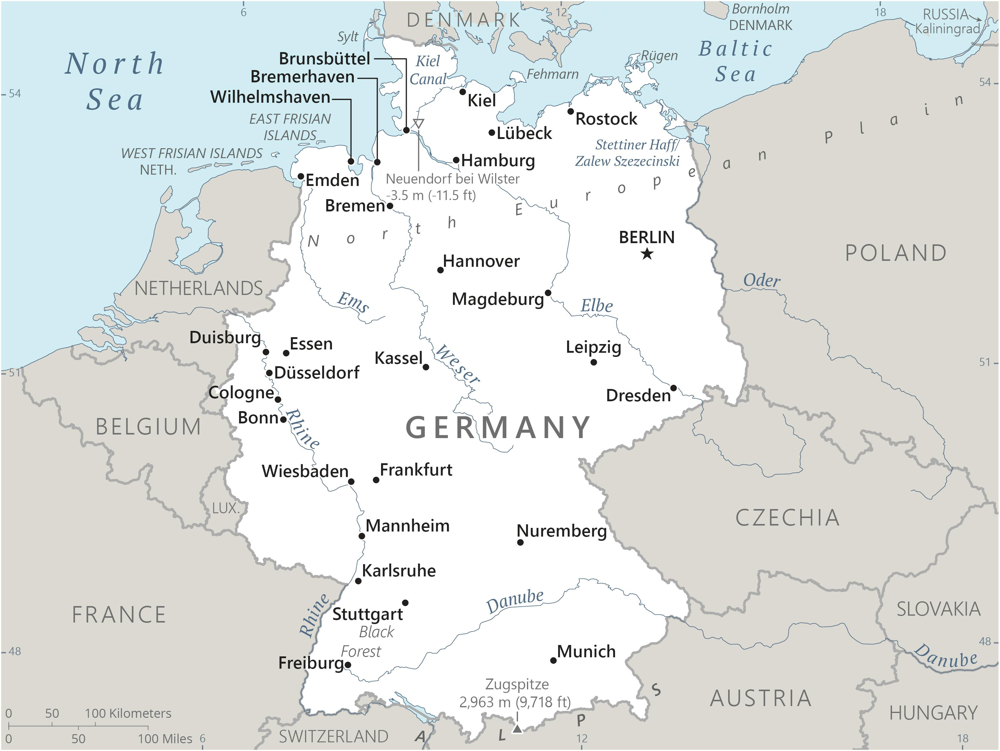

Genel Bilgiler
Almanya, Orta Avrupa’da federal bir cumhuriyettir. 357.021 km² yüzölçümüyle Avrupa'nın en büyük ülkelerinden biridir ve başkenti Berlin'dir. 16 eyaletten oluşan ülke, Avrupa Birliği’nin en büyük ekonomisine sahip olup sanayi üretimi, yüksek teknoloji ve ihracat alanlarında güçlü bir aktördür.
Kuzeyde Kuzey ve Baltık Denizleri’ne kıyısı vardır. Doğusunda Polonya ve Çekya, güneyinde Avusturya ve İsviçre, batısında Fransa, Lüksemburg, Belçika ve Hollanda ile kara sınırları bulunur. Bu konum, Almanya’yı Avrupa’nın merkezinde stratejik bir ulaşım ve ticaret hub’ı haline getirir.
Başkent: Berlin
Kıta: Avrupa
Yüzölçümü: 357.022 km²
Nüfus (2025): 83.240.525

Bayrak Anlamı: Almanya bayrağı yatay üç eşit şeritten oluşur: siyah, kırmızı ve altın sarısı. Siyah renk halkın birlikteliğini, kırmızı renk özgürlük mücadelesini, altın sarısı ise özgürlük ve eşitlik arzusunu simgeler. Bu renkler 1848-1849 yıllarındaki devrimci hareketle ve ulusal birliği temsil eder.
Almanya Haritası
Ekonomi
Almanya’nın ekonomisi dünyanın en büyük dördüncü ekonomisidir. Öne çıkan sektörler otomotiv, makine, kimya ve elektronik olup, Stuttgart merkezli Mercedes-Benz ve Porsche, Münih merkezli BMW gibi dünya çapında tanınan markalar ekonomiyi güçlendirir. Ayrıca Siemens ve BASF gibi şirketler makine ve kimya alanlarında lider konumdadır. 2024 yılı itibarıyla ihracat 1,66 trilyon dolar civarındadır.
| Yıl | İhracat (Milyar $) | İthalat (Milyar $) |
|---|---|---|
| 2019 | 1425 | 1181 |
| 2020 | 1337 | 1072 |
| 2021 | 1618 | 1384 |
| 2022 | 1798 | 1593 |
| 2023 | 1830 | 1610 |